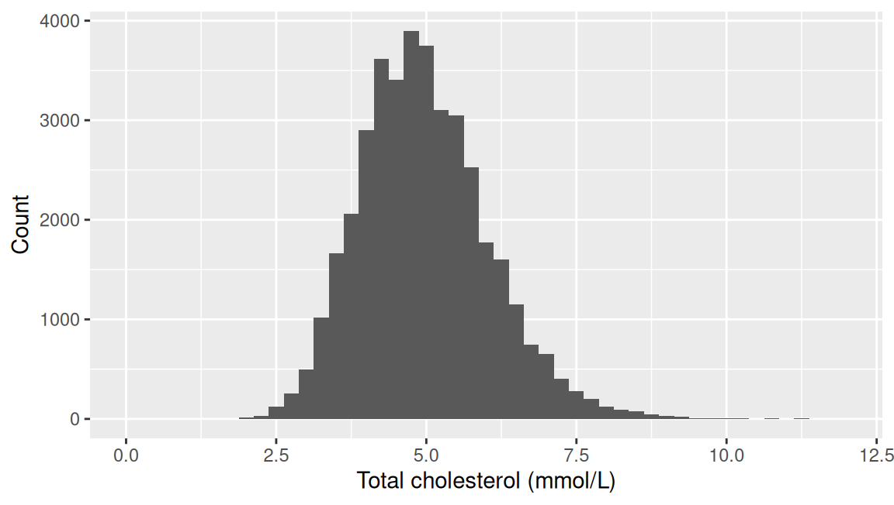
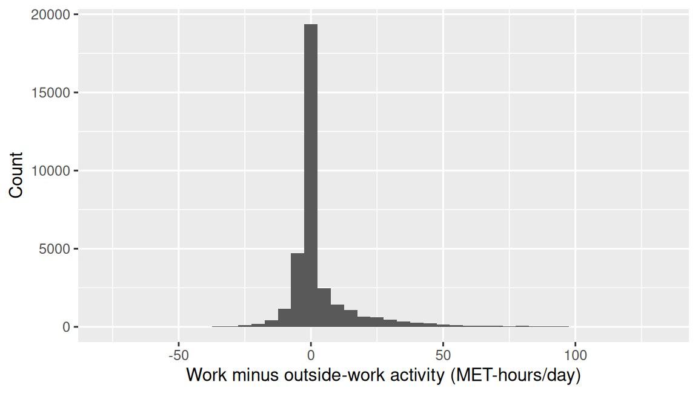
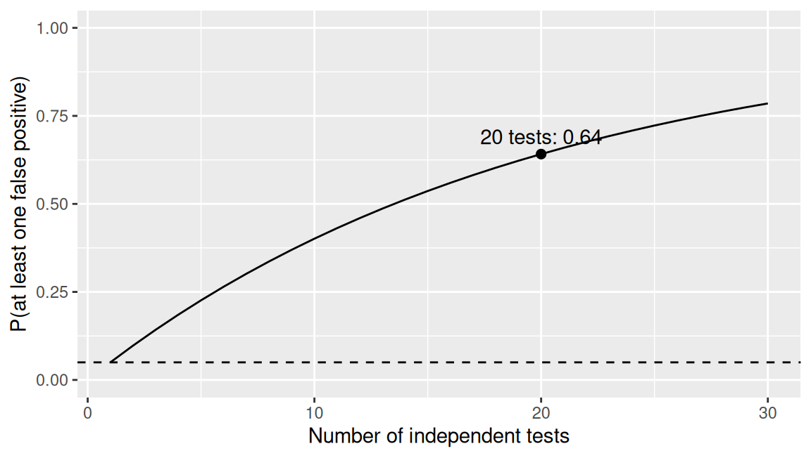

| Quantity | Estimate | 95% CI | p |
|---|---|---|---|
| Sedentary time, women minus men, hours/day | 0.26 | 0.03 to 0.49 | 0.026 |
Hypothesis tests and measures of association
Week 9
Fred Ho
What you have learnt so far
- Stats, Week 8. The 95% CI for the difference in improvement between the
strep_tbarms, 0.169 to 0.559, excluded zero. We read that as a real difference, but haven’t formalised it yet - Stats, Week 7. Variable type decided which summary and which plot were valid
- Epi, Week 2. RR and OR off a 2x2 table, computed as point estimates, but without 95% CIs
- Epi, Week 5. Bradford Hill’s strength of association. Can it be defined statistically?
By the end of this week, you will be able to
- Formulate null and alternative hypotheses for a research question
- Explain what a p-value is and is not, and define Type I and Type II error and the problem multiple testing creates
- Describe the relationship between a confidence interval and a hypothesis test
- Select, interpret, and report an appropriate test given the outcome type and the study design (one-sample, paired, or independent)
Block 1: the logic of testing
What the 95% CI already told you
- Last week’s 95% CI for the difference in improvement led us to conclude it was a real difference
- We have yet to formalise why
- So what does a hypothesis test do?
The null and the alternative
- The null hypothesis (H0) is the specific claim being tested, usually of no difference
- The alternative hypothesis (H1) is what’s left if the null is implausible
- We only use the two-sided alternative, i.e., there is a difference
- A one-sided alternative (e.g., X > Y) also exists but is rarely used and is not covered here
- Both are hypotheses about the population, never about the sample we measured
The courtroom analogy
- A defendant is presumed innocent (the null) until the evidence makes that presumption implausible
- Failing to convict is not the same as proving innocence
- A test works the same way: failing to reject the null is not the same as proving it true
A test statistic as evidence
- A court needs evidence, and so does a hypothesis test
- A test statistic is the evidence. It measures how far the data sit from what the null hypothesis predicts
- The most classical test statistic is the z-score: the difference in means divided by its standard error
- How many standard errors the difference sits from zero
- A bigger distance from the null is stronger evidence against it
From test statistic to p-value
- In a courtroom, judges are the mechanism that keeps verdicts consistent even when the evidence presented is not
- In hypothesis tests, test statistics (evidence) vary, but they can be converted into the standardised p-values (the ‘judges’)
- Formally, a p-value quantifies how likely data this extreme would arise, if the null hypothesis were true
- Large p-value: the data are unsurprising under the null
- Small p-value: the data would be unusual under the null
What a p-value is and is not
- A p-value is:
- Based on the null hypothesis, the probability of seeing the data at least this extreme
- What a p-value is not:
- The probability that the null hypothesis is true
- A measure of effect size
Hypotheses for a real question
- Null hypothesis. Mean sedentary time is the same in men and women in the population
- Alternative hypothesis. Mean sedentary time differs between men and women in the population
Sedentary time by gender
- Women reported slightly more sedentary time than men, about 0.26 hours/day (95% CI 0.03 to 0.49 hours/day, p = 0.026)
- p is below 0.05, so we reject H0: the result is statistically significant
- But it is small: about 15 minutes a day, on a scale of many hours a day
Compatibility, not a verdict
- In a courtroom, mostly people are interested in the yes/no verdict
- In a hypothesis test, we try to steer away from the binary verdict
- A p-value indicates how compatible the data are with a hypothesis
- 0.05 is a convention, not a law of nature
- A p-value of 0.049 is not meaningfully different evidence from 0.051
- Report exact p-values, not just ‘p < 0.05’
This week’s methodological anchor
- Altman and Bland (1995), BMJ: ‘Absence of evidence is not evidence of absence’
- A non-significant result rules out neither a real effect nor an unimportant one; only the CI says which is plausible
- RR 3.0 (95% CI 0.8 to 11.3): wide, compatible with a large effect
- RR 1.1 (95% CI 0.9 to 1.3): narrow, rules out anything large
- The ASA’s own statement on p-values (Wasserstein and Lazar, 2016, The American Statistician) reaffirms this:
- A p-value was never designed to measure the size or importance of an effect, only how compatible the data are with the null
Errors associated with tests
- Data are random, so a hypothesis test can go wrong, but unlike in the legal system, we can quantify how likely that is
- Type I error: rejecting the null hypothesis when it’s true, a false positive
- The Type I error rate is the significance level itself, usually fixed at 0.05
- This is why we compare a p-value with 0.05, or check whether a 95% CI excludes the null value
- Type II error: failing to reject the null hypothesis when it’s false, a false negative
- One minus the Type II error rate is the statistical power
- Neither error can be driven to zero at the same time
- For a fixed sample size, tightening one loosens the other
95% CI and tests
- A 95% CI excluding the null value corresponds to p < 0.05 on the same data
- Two presentations of the same evidence
- The 95% CI carries the size of the effect and its precision
- The p-value carries neither
- This is why the reporting standard, coming up shortly, leads with the estimate
Try it: does this 95% CI imply a significant test?
| Quantity | Estimate | 95% CI |
|---|---|---|
| Improved, streptomycin minus control (difference in proportions) | 0.364 | 0.169 to 0.559 |
| Improved, men minus women (difference in proportions) | 0.088 | -0.121 to 0.296 |
| Sedentary time, women minus men, hours/day | 0.260 | 0.03 to 0.49 |
- Each row is a difference, so the null value is 0
- For each row, would the test on the same data come out below 0.05? How do you know?
- Three minutes
Try it: the answer
| Quantity | Estimate | 95% CI |
|---|---|---|
| Improved, streptomycin minus control (difference in proportions) | 0.364 | 0.169 to 0.559 |
| Improved, men minus women (difference in proportions) | 0.088 | -0.121 to 0.296 |
| Sedentary time, women minus men, hours/day | 0.260 | 0.03 to 0.49 |
- Streptomycin minus control: clear of the null value of 0. p < 0.05
- Men minus women, improved: straddles the null value of 0. p > 0.05 (p = 0.48)
- Sedentary time, women minus men: its lower limit sits just clear of the null value of 0. p is only just below 0.05 (we saw p = 0.026)
- The 95% CI and the test are one piece of evidence in two presentations, and the 95% CI is the one that also tells us the size
The reporting standard
- We should not rely only on a p-value to quantify differences
- Whenever possible, report effect size, 95% CI, and p-value
- This is what we expect you to do throughout your MPH
The independent-samples t-test
- This is the test behind the sedentary time result
- Compares two entirely separate groups, with no link between a value in one group and a value in the other
- Assumptions: independence between groups, and a roughly normal sampling distribution (or a large enough sample for the CLT to apply)
Example 1: Cholesterol by gender
| Quantity | Estimate | 95% CI | p |
|---|---|---|---|
| Cholesterol, women minus men, mmol/L | 0.17 | 0.15 to 0.19 | < 0.001 |
- H0: Mean total cholesterol is the same in men and women in the population
- H1: Mean total cholesterol differs between men and women in the population
- Mean total cholesterol was about 0.17 mmol/L higher in women than in men (95% CI 0.15 to 0.19 mmol/L, p < 0.001)
- Check the direction before reading the CI: the software names which group was subtracted from which

Example 2: Age by gender
| Quantity | Estimate | 95% CI | p |
|---|---|---|---|
| Age, men minus women, years | 0.7 | 0.4 to 1.1 | < 0.001 |
- H0: Mean age is the same in men and women in the population
- H1: Mean age differs between men and women in the population
- Men in this sample were on average about 0.7 years older than women (95% CI 0.4 to 1.1 years, p < 0.001)
- From Chapter 5’s Exercise 3
Significant, but does it matter?
- Both results above are significant at p < 0.001
- With such large samples, a difference of no clinical interest is overwhelmingly significant
- Cholesterol: 0.17 mmol/L, real and worth noting alongside the 5.2 mmol/L benchmark ahead
- Age: 0.7 years on a population averaging around 47. Statistically real, practically negligible
Try it: write the sentence
| Quantity | Estimate | 95% CI | p |
|---|---|---|---|
| Improved, streptomycin minus control (difference in proportions) | 0.36 | 0.17 to 0.56 | < 0.001 |
| Improved, men minus women (difference in proportions) | 0.09 | -0.12 to 0.3 | 0.48 |
- Write the sentence that describes and interprets each result
- Three to five minutes
Try it: the answer
- The proportion improved was about 0.36 higher with streptomycin than with control (95% CI 0.17 to 0.56, p < 0.001)
- The proportion improved was about 0.09 higher in men than in women (95% CI -0.12 to 0.3, p = 0.48). The 95% CI includes the null value of 0, so there is no good evidence of a difference by gender
- Not the same as evidence of no difference
Block 2: choosing the right test
Limits of the independent-samples t-test
- So far we compared a continuous variable (e.g., age, cholesterol, sedentary time) between two groups. What if our data are different?
- There are tests for different scenarios
- The logic of testing is identical, but each test copes with different data
What decides the test
| Outcome | Comparison / explanatory variable | Test |
|---|---|---|
| Continuous | Binary, i.e., two independent groups | Independent-samples t-test |
| Continuous | A fixed benchmark | One-sample t-test |
| Continuous | Two related measurements (same person) | Paired t-test |
| Categorical | Categorical | Chi-squared test |
- The outcome type and the study design decide the test
The one-sample t-test
- Tests a single sample’s mean against a fixed reference value, not against another group’s mean
- Same logic as the independent-samples test, one fewer moving part
Cholesterol against a clinical benchmark
| Quantity | Estimate | 95% CI | p |
|---|---|---|---|
| Total cholesterol against 5.2 mmol/L benchmark | 0.23 mmol/L below | 0.22 to 0.24 mmol/L below | < 0.001 |
- H0: Mean cholesterol is at 5.2 mmol/L in the population
- H1: Mean cholesterol is different from 5.2 mmol/L in the population
- Mean total cholesterol was about 0.23 mmol/L below the benchmark (95% CI 0.22 to 0.24 mmol/L below, p < 0.001)
- 5.2 mmol/L is the American guideline’s ‘desirable’ figure; UK guidance uses 5.0 mmol/L instead
One-sample t-test: assumption check
- The sampling distribution of the mean should be roughly normal, not
cholitself cholis mildly right-skewed, but n is near 39,000- The CLT applies, so the assumption holds comfortably
- 10 values above 12 mmol/L are not shown

One-sample t-test: the alternative
- The one-sample Wilcoxon signed-rank test tests the median instead of the mean
- It earns its place when the sample is small (typically under 30) or the skew is pronounced
- Here: median 4.89 mmol/L (Q1 to Q3 4.22 to 5.61 mmol/L), p < 0.001
- Same conclusion as the t-test, as expected with a sample this large
The paired t-test
- The independent-samples t-test assumes the two groups are unrelated observations
- The paired t-test is for when the two groups are related
- The same or a similar measurement in the same individuals
- Sibling or twin analysis
- Matched case-control studies
Two domains within one person
| Quantity | Estimate | 95% CI | p |
|---|---|---|---|
| Work minus outside-work activity, MET-hours/day | 3.07 | 2.93 to 3.21 | < 0.001 |
- H0: The mean within-person difference (work minus outside-work activity) is zero in the population
- H1: The mean within-person difference is not zero in the population
- Activity at work was about 3.07 MET-hours/day higher than activity outside work (95% CI 2.93 to 3.21 MET-hours/day, p < 0.001)
met_w(activity at work) andmet_r(activity outside work): two domains measured within a person
Paired t-test: assumption check
- The sampling distribution of the within-person difference should be roughly normal
- The differences are skewed, with a spike at zero: many participants report no occupational activity at all
- The sample is large, so the CLT still applies, but the skew is the cue to check the alternative

Paired t-test: the alternative
- The Wilcoxon signed-rank test works on the ranks of the within-person differences, so one extreme value can’t dominate the result
- It earns its place when the sample is small or the differences are strongly skewed
- Here the t-test and the Wilcoxon test agree despite the skew (both p < 0.001)
- With a smaller sample, or a more extreme distribution, they can disagree
The chi-squared test
- Everything tested so far has been a mean or a difference between means
- The chi-squared test examines the association between two categorical variables, usually presented in a contingency table
- The same logic applies:
- What the table is expected to look like if the two variables were unrelated (i.e., H0)
- How far the real table sits from that
- The chi-squared statistic is that distance, summed across every cell
Streptomycin, tested
| Quantity | Chi-squared | df | p |
|---|---|---|---|
| Improved, streptomycin vs control | 14.18 | 1 | 0.000166 |
| Arm | Not improved | Improved |
|---|---|---|
| Streptomycin | 17 | 38 |
| Control | 35 | 17 |
- H0: The proportion improved is the same with streptomycin and with control in the population
- H1: The proportion improved differs between the two arms in the population
- Improvement was more common with streptomycin (38 of 55) than with control (17 of 52), p < 0.001
- A p-value alone doesn’t say by how much: the risk ratio and odds ratio, later in this block, put a size on it
Chi-squared test: assumption check
- Every expected count should be reasonably large, conventionally at least 5
- Chi-squared is an approximation, and the expected-count condition is required for the approximation to work
- For the streptomycin table, the smallest expected count is 25.3, comfortably above 5
Yates’ continuity correction
- Same data, same table, two different p-values
| Version | Chi-squared | p |
|---|---|---|
| Uncorrected | 14.18 | 0.000166 |
| With Yates' correction | 12.76 | 0.0003548 |
- Rationale
- Counts are whole numbers, but the chi-squared distribution is smooth
- With small expected counts, that approximation makes the p-value too small
- The correction subtracts 0.5 from each observed-expected gap before squaring
- The statistic shrinks slightly, so the p-value rises
- Recommendation
- Expected counts around 5 to 10: use the correction
- Expected counts below 5: use Fisher’s exact test instead
- Comfortably above that, as here: leave it off, since it changes little
Chi-squared test: the alternative
- Fisher’s exact test is the answer when the expected-count condition fails
- It tests the same association, exactly instead of by approximation
- Here: p = 0.000222, the same conclusion as the chi-squared test
- Typical in a small trial or with a rare outcome
Try it: which test?
- A. Blood pressure reduction is compared between two independently randomised drug groups, roughly symmetric in each group
- B. The same patients’ resting heart rate is measured before starting an exercise programme, then again eight weeks later
- C. Whether a patient has a chronic cough is recorded against smoking status in a survey of 2,000 adults
- D. Recovery time in days is recorded for eight patients on each of two pain protocols in turn, and the within-patient differences are strongly right-skewed
- E. Whether a rare side effect occurs is compared between two arms of a 24-patient pilot trial, and several expected counts in the 2x2 table are below 5
- For each: name the outcome type, the comparison, and the test
Try it: the answer
| Scenario | Outcome | Comparison / explanatory variable | Test | |
|---|---|---|---|---|
| A | Blood pressure reduction, two randomised drug groups | Continuous | Two independent groups, roughly symmetric | Independent-samples t-test |
| B | Resting heart rate, before and after an exercise programme | Continuous | Two measurements on the same person | Paired t-test |
| C | Chronic cough by smoking status, 2,000 adults | Categorical | Categorical, large sample | Chi-squared test |
| D | Recovery time on two pain protocols, eight patients | Continuous | Two measurements on the same person, small sample, strongly skewed differences | Wilcoxon signed-rank test |
| E | Rare side effect in a 24-patient pilot, small expected counts | Categorical | Categorical, expected counts below 5 | Fisher’s exact test |
Risk ratio and odds ratio, with 95% CIs
- Both quantities came from the epi half as point estimates
- They are estimates like any other, so a 95% CI goes round each one
- Null value is 1
- The effect size is now a ratio, not a difference
- A ratio of 1 means no association
- A CI excluding 1 corresponds to a significant chi-squared test
Risk ratio and odds ratio for streptomycin
| Quantity | Estimate | 95% CI | p |
|---|---|---|---|
| Risk ratio, streptomycin vs control | 2.11 | 1.38 to 3.24 | < 0.001 |
| Odds ratio, streptomycin vs control | 4.60 | 2.04 to 10.39 | < 0.001 |
- Improvement was about twice as likely with streptomycin as with control (RR 2.11, 95% CI 1.38 to 3.24, p < 0.001)
- Both 95% CIs exclude the null value of 1, matching the significant chi-squared test
Try it: the 2x2, by hand
| Arm | Not improved | Improved |
|---|---|---|
| Streptomycin | 17 | 38 |
| Control | 35 | 17 |
- From this table: the risk of improvement in each arm, then the risk ratio, then the odds ratio
- Then: why does the odds ratio sit so much further from 1 than the risk ratio?
- Five minutes
Try it: the answer
| Arm | Not improved | Improved |
|---|---|---|
| Streptomycin | 17 | 38 |
| Control | 35 | 17 |
- Streptomycin risk: 38/55 = 0.69. Control risk: 17/52 = 0.33
- Risk ratio: 0.69 / 0.33 = 2.11
- Odds ratio: (38 x 35) / (17 x 17) = 4.6
- The odds ratio exaggerates when the outcome is common, which is why it is not a risk ratio and should not be read as one
Back to the independent-samples t-test
- Assumption check: the two groups should look similar in shape, as the boxplots for cholesterol by gender did
- Spread may differ between groups:
t.test()doesn’t assume equal variance by default
- Spread may differ between groups:
- Alternative: the Mann-Whitney test (Wilcoxon rank-sum) compares the ranks of the two groups’ values
- It earns its place when the samples are small or strongly skewed
What decides the test, and what to check
| Outcome | Comparison / explanatory variable | Test | Assumption check | If it fails |
|---|---|---|---|---|
| Continuous | Binary, i.e., two independent groups | Independent-samples t-test | Similar spread and shape in each group; roughly normal sampling distribution | Mann-Whitney (Wilcoxon rank-sum) |
| Continuous | A fixed benchmark | One-sample t-test | Roughly normal sampling distribution of the mean | One-sample Wilcoxon signed-rank |
| Continuous | Two related measurements (same person) | Paired t-test | Roughly normal sampling distribution of the within-person difference | Wilcoxon signed-rank |
| Categorical | Categorical | Chi-squared test | Every expected count at least 5 | Fisher’s exact test |
Block 3: error, power, and multiple testing
Statistical power, and what it depends on
- Power: the probability of detecting an effect of a given size, if it exists. One minus the Type II error rate from Block 1
- Rises with a larger effect, a bigger sample, or less variable data
- Falls under a stricter significance level
Why post-hoc power is a circular argument
- Power asks how likely a study is to detect an effect, before it runs
- Once the data are in, the estimate and its 95% CI already say what the study could resolve
- Power computed from the observed effect is just a re-expression of the p-value
Testing many things at once

- Twenty independent tests at 0.05 each: on average one comes up significant by chance alone
- The error rate people think they are controlling is per test
- With many tests in one study, some Type I errors are bound to occur
Application
Four claims, four 95% CIs
- Read each result and the paper’s own conclusion, and discuss in pairs
- Does the sentence say what the numbers support? Where it does not, what would you write instead?
- Ten minutes
| Study | Result | Paper’s conclusion | Link |
|---|---|---|---|
| Al-Lamee et al. (2018), ORBITA, Lancet | Exercise time increment, PCI vs placebo: 16.6 s (95% CI -8.9 to 42.0), p = 0.20 | ‘…PCI did not increase exercise time by more than the effect of a placebo procedure.’ | PubMed |
| Nissen and Wolski (2007), NEJM | Death from cardiovascular causes, rosiglitazone vs control: OR 1.64 (95% CI 0.98 to 2.74), p = 0.06 | ‘…an increase in the risk of death from cardiovascular causes that had borderline significance.’ | PubMed |
| Sung et al. (1993), Lancet | Bleeding controlled: 90% sclerotherapy vs 84% octreotide, difference 95% CI 0 to 19.5pp, p = 0.55 (n = 100) | ‘…octreotide infusion and emergency sclerotherapy are equally effective in controlling variceal haemorrhage.’ | PubMed |
| CRASH-2 collaborators (2010), Lancet | All-cause mortality: RR 0.91 (95% CI 0.85 to 0.97), p = 0.0035 (n = 20,211) | ‘Tranexamic acid safely reduced the risk of death in bleeding trauma patients in this study.’ | PubMed |
Four claims, judged: ORBITA and Nissen and Wolski
| Study | Result |
|---|---|
| ORBITA | Exercise time, PCI vs placebo: 16.6 s (95% CI -8.9 to 42.0), p = 0.20 |
| Nissen and Wolski | CV death, rosiglitazone vs control: OR 1.64 (95% CI 0.98 to 2.74), p = 0.06 |
- ORBITA: too imprecise to support ‘no benefit’
- The CI runs from a small negative effect to a 42-second gain, compatible with a real improvement
- Easy to round down to ‘stents don’t work’, the absence-of-evidence trap
- Nissen and Wolski: borderline, not dismissible
- An OR of 1.64 (CI to 2.74) isn’t a small risk if it’s real
- ‘Borderline significance’ is often not accepted now
- Interpret as non-significant increase but acknowledge imprecision
Four claims, judged: Sung et al. and CRASH-2
| Study | Result |
|---|---|
| Sung et al. | Bleeding controlled, 90% vs 84%: difference 95% CI 0 to 19.5pp, p = 0.55 (n = 100) |
| CRASH-2 | All-cause mortality: RR 0.91 (95% CI 0.85 to 0.97), p = 0.0035 (n = 20,211) |
- Sung et al.: too small to claim equivalence
- n = 100; the CI on the difference runs to almost 20 percentage points
- ‘Equally effective’ needs a trial sized to rule out a gap that large
- CRASH-2: sound
- Huge sample, tight CI clear of the null, meaningful effect size
Key points, and what the lab does
- A p-value is how compatible the data are with the null, and nothing else:
- not the probability the null is true
- not an effect size
- not evidence that there is no effect
- Report the estimate, its 95% CI, and its p-value together whenever possible
- The outcome type and the design pick the test, and each test has an assumption to check and an alternative if it fails
- Comparisons can be made by looking at either the difference (null = 0) or a ratio (null = 1)
- The lab runs every one of these tests in R on
nhanes_mphandstrep_tb